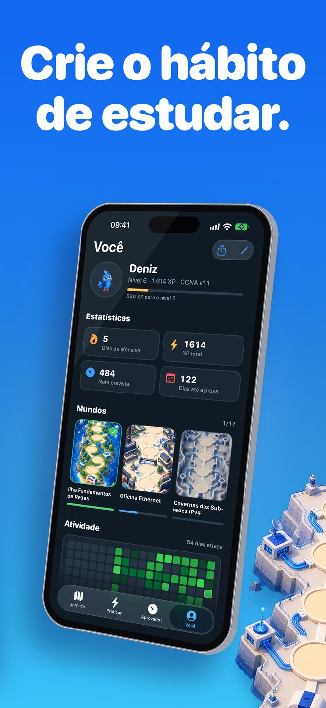
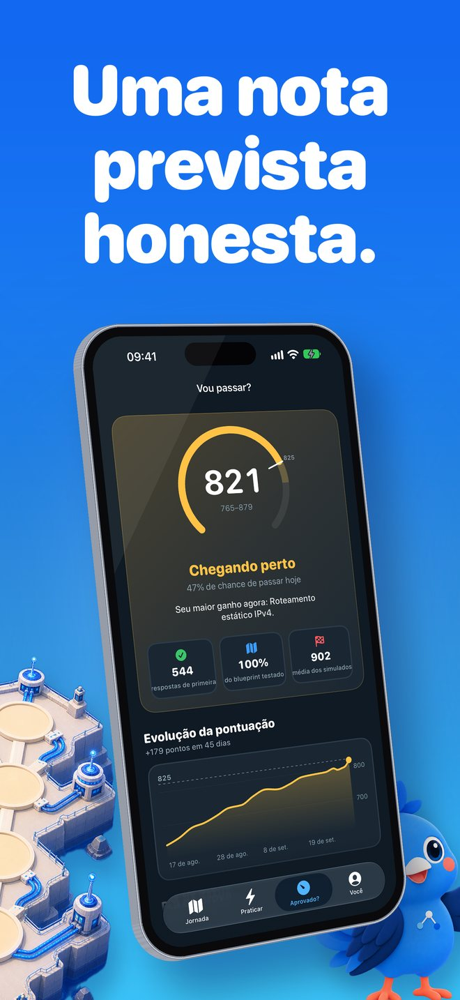

O que é o Linkwing?
Nunca mexeu com redes? Comece do zero, no seu ritmo, com o Kavi voando ao seu lado.
O Linkwing ensina redes de computadores em linguagem simples, com diagramas ilustrados e lições de poucos minutos. Quando você estiver pronto, o mesmo caminho leva até a prova CCNA 200-301.
Capturas de tela


Para quem é
- Iniciantes que querem entender como uma rede funciona
- Quem está migrando de carreira para TI
- Estudantes de informática e de cursos técnicos
- Candidatos ao CCNA 200-301
Comece do zero
- 2 mundos para iniciantes com 17 lições curtas: o que é uma rede, cliente e servidor, switch, roteador, firewall, LAN, WAN e Internet, endereço IP e MAC, cabos e fibra, Wi-Fi, VLANs, RAID, NAS e backups
- Analogias do dia a dia e diagramas nativos
- Toque em qualquer palavra destacada para ver o significado em linguagem simples
- Cada lição termina com perguntas fáceis que explicam todas as alternativas erradas
- Diga seu nível: quem está começando parte da primeira lição; os demais fazem um check-up adaptativo de 5 perguntas que pula o que você já sabe
Um mapa para explorar
- 15 mundos do exame num mapa ilustrado, com o Kavi, uma calopsita azul, voando de parada em parada
- Sequências diárias, XP, medalhas e missões
- Widget com a questão do dia e lembrete diário opcional
Preparação honesta para o CCNA
- Mais de 1.100 questões originais no estilo da prova: exibições, escolha duas, ordenação, associação e cálculos
- Mais de 900 flashcards com repetição espaçada
- 75 labs práticos de comandos IOS: digite comandos de verdade, e as abreviações funcionam
- Academia de Subnetting com exercícios gerados na hora
- Simulados cronometrados, com o peso do blueprint
- Conteúdo para o CCNA 200-301 v1.1 e para o v2.0, que começa em 3 de fevereiro de 2027
- Aba "Vou passar?": a nota prevista só aparece depois de 40 respostas suas, sem números inventados no começo
- Previsão para o dia da prova: quando você estará pronto no seu ritmo diário, com a evolução da sua nota
Funciona offline, no seu idioma
- Estude sem internet, no ônibus, no metrô ou onde quiser
- Sem cadastro e sem conta
- Interface em 8 idiomas, incluindo português do Brasil, com seletor de idioma no app
As lições para iniciantes estão em português; as lições de nível de exame mostram título e resumo em português com o texto completo em inglês, e as questões da prova e os labs de IOS estão em inglês.
Comece grátis
O Linkwing é grátis para começar. O Linkwing Pro é uma assinatura opcional com renovação automática, que você gerencia ou cancela nos ajustes da sua Conta Apple.
Perguntas frequentes
O que é o Linkwing?
O Linkwing é um app para iPhone que ensina redes de computadores do zero e prepara você para a prova Cisco CCNA 200-301. Ele reúne 17 lições para iniciantes em 2 mundos, um mapa ilustrado com 15 mundos do exame guiado pelo Kavi, uma calopsita azul, 1.136 questões originais no estilo da prova, 929 flashcards, 75 labs de comandos IOS, uma Academia de Subnetting e simulados cronometrados. Requer iOS 26 ou posterior e é desenvolvido por Ata Tunc Bilge.
O Linkwing é grátis?
O download é grátis e você pode começar sem pagar. O Linkwing Pro é uma assinatura opcional com renovação automática que libera o curso completo; você gerencia ou cancela nos ajustes da sua Conta Apple.
As questões são da prova real do CCNA?
Não. Todas as questões do Linkwing são originais, escritas no estilo da prova; não são questões vazadas nem dumps. A ideia é você entender o conteúdo, não decorar respostas.
O Linkwing cobre o CCNA v2.0?
Sim. O Linkwing cobre o CCNA 200-301 v1.1 (provas até 2 de fevereiro de 2027) e o v2.0 (a partir de 3 de fevereiro de 2027), e escolhe o blueprint pela data da sua prova. Confirme os detalhes na página oficial de tópicos do exame da Cisco.
Está em português e funciona offline?
Sim. A interface está em 8 idiomas, incluindo português do Brasil, com seletor de idioma no app. As 17 lições para iniciantes estão totalmente em português, incluindo as legendas dos diagramas e um glossário de 60 termos que se explicam com um toque. As lições de nível de exame mostram título e resumo em português, com o texto completo em inglês. As questões no estilo da prova e os labs de IOS estão em inglês, porque a prova CCNA é oferecida em inglês e japonês. O Linkwing funciona offline e não exige cadastro.